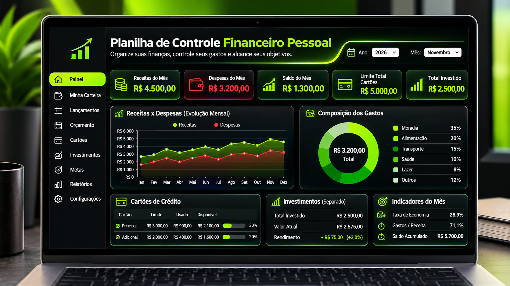

Receitas e despesas
Registre entradas e saídas e organize suas movimentações por mês.
Organize receitas, despesas, cartões e investimentos em um só lugar, com uma planilha automatizada e um painel que facilita a visualização das suas finanças.
Conhecer a planilha
Registre entradas e saídas e organize suas movimentações por mês.
Visualize compras, parcelas e informações de limite.
Acompanhe seus investimentos em uma área separada.
Consulte resumos financeiros em um único lugar.
Planilha de Controle Financeiro Pessoal
Pagamento único • Produto digital
Uma cópia da Planilha de Controle Financeiro Pessoal. Os detalhes de entrega serão confirmados no checkout.
A planilha foi criada para facilitar o preenchimento das movimentações e a consulta dos resumos. Consulte as instruções fornecidas com o produto.
O acesso será informado na plataforma de pagamento escolhida, após a configuração da entrega.